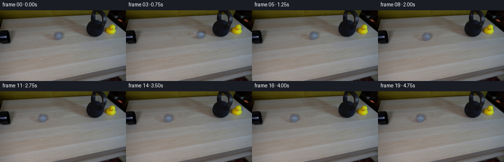
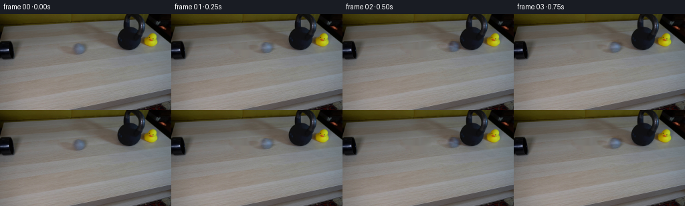

CODING AGENTS AS PIXEL WORLD MODELS
traex/GPT-6.1-Sol · 0196
点击播放 · 原生 RGB 像素
逐轮保存的候选
回放视频、检查图与代码变化。
每份候选均可单独播放。实际图片检查记录在下方工具轨迹中。
候选 01播放与检查图
点击播放 · 原生 RGB 像素

展开代码变化
--- 上一保存版本
+++ 本次保存版本
@@ -0,0 +1,86 @@
+from pathlib import Path
+
+import cv2
+import numpy as np
+from PIL import Image
+
+import artifact_io
+
+
+ROOT = Path(__file__).resolve().parent
+
+
+def prepare_scene(image):
+ """Recover the small piece of tabletop hidden by the moving ball."""
+ h, w = image.shape[:2]
+ mask = np.zeros((h, w), np.uint8)
+ polygon = np.array(
+ [(90, 48), (100, 47), (108, 44), (114, 42), (125, 42),
+ (131, 46), (133, 54), (129, 60), (122, 63), (111, 63),
+ (103, 60), (96, 57), (90, 54)], np.int32)
+ cv2.fillPoly(mask, [polygon], 255)
+ table = cv2.inpaint(image, mask, 4, cv2.INPAINT_NS).astype(np.float32)
+
+ # Carry the photographic shading, fuzzy outline and soft contact shadow
+ # together, rather than replace the original object with a drawn disk.
+ object_delta = image.astype(np.float32) - table
+ return table, object_delta
+
+
+def ball_position(t):
+ x0, impact_x = 119.6, 168.1
+ impact_time = 0.5
+ if t <= impact_time:
+ x = x0 + (impact_x - x0) * max(0.0, t) / impact_time
+ else:
+ # The massive, stationary weight is effectively a rigid obstacle.
+ # The elastic rubber ball rebounds, then loses speed through rolling
+ # resistance; it never transfers appreciable motion to the weight.
+ s = min(t - impact_time, 2.5)
+ x = impact_x - 65.0 * s + 13.0 * s * s
+ y = 52.0 - 0.077 * (x - x0)
+ return x, y
+
+
+def render_sample(t, table, object_delta, xx, yy):
+ cx, cy = ball_position(t)
+ # Slight perspective change along the straight tabletop trajectory.
+ scale = 1.0 - (cx - 119.6) * 0.00040
+ # A brief subpixel flattening against the iron at the moment of impact.
+ contact = np.exp(-((t - 0.5) / 0.025) ** 2)
+ sx = scale * (1.0 - 0.045 * contact)
+ sy = scale * (1.0 + 0.016 * contact)
+ map_x = (119.6 + (xx - cx) / sx).astype(np.float32)
+ map_y = (52.0 + (yy - cy) / sy).astype(np.float32)
+ delta = cv2.remap(object_delta, map_x, map_y,
+ cv2.INTER_CUBIC, borderMode=cv2.BORDER_CONSTANT,
+ borderValue=0)
+ return table + delta
+
+
+def main():
+ image = np.asarray(Image.open(ROOT / 'first_frame.png').convert('RGB'))
+ assert image.shape == (144, 256, 3)
+ table, object_delta = prepare_scene(image)
+ yy, xx = np.mgrid[:144, :256].astype(np.float32)
+ frames = np.empty((20, 144, 256, 3), dtype=np.uint8)
+ frames[0] = image
+ for i in range(1, 20):
+ t = i / 4.0
+ # Short photographic exposure. Sample the actual piecewise dynamics,
+ # including the turnaround, rather than smear a ball through the iron.
+ exposures = np.linspace(-1 / 160, 1 / 160, 5)
+ frame = sum(render_sample(t + dt, table, object_delta, xx, yy)
+ for dt in exposures) / len(exposures)
+ frames[i] = np.clip(np.rint(frame), 0, 255).astype(np.uint8)
+
+ temporary = ROOT / '.tmp'
+ temporary.mkdir(exist_ok=True)
+ Image.fromarray(np.uint8(np.clip(table, 0, 255))).save(temporary / 'table.png')
+ for i in (1, 2, 3, 8, 19):
+ Image.fromarray(frames[i]).save(temporary / f'candidate_{i:02d}.png')
+ artifact_io.save(frames, ROOT)
+
+
+if __name__ == '__main__':
+ main()
候选 02播放与检查图
点击播放 · 原生 RGB 像素


展开代码变化
--- 上一保存版本
+++ 本次保存版本
@@ -28,7 +28,7 @@
def ball_position(t):
- x0, impact_x = 119.6, 168.1
+ x0, impact_x = 119.6, 169.0
impact_time = 0.5
if t <= impact_time:
x = x0 + (impact_x - x0) * max(0.0, t) / impact_time
@@ -63,6 +63,8 @@
assert image.shape == (144, 256, 3)
table, object_delta = prepare_scene(image)
yy, xx = np.mgrid[:144, :256].astype(np.float32)
+ iron = ((xx >= 174) & (xx <= 214) & (yy <= 54)
+ & (image.mean(axis=-1) < 65))
frames = np.empty((20, 144, 256, 3), dtype=np.uint8)
frames[0] = image
for i in range(1, 20):
@@ -73,6 +75,7 @@
frame = sum(render_sample(t + dt, table, object_delta, xx, yy)
for dt in exposures) / len(exposures)
frames[i] = np.clip(np.rint(frame), 0, 255).astype(np.uint8)
+ frames[i][iron] = image[iron]
temporary = ROOT / '.tmp'
temporary.mkdir(exist_ok=True)
候选 03播放与检查图
候选 04播放与检查图
点击播放 · 原生 RGB 像素

展开代码变化
--- 上一保存版本
+++ 本次保存版本
@@ -76,6 +76,7 @@
for dt in exposures) / len(exposures)
frames[i] = np.clip(np.rint(frame), 0, 255).astype(np.uint8)
frames[i][iron] = image[iron]
+ frames[i, :, 181:] = image[:, 181:]
temporary = ROOT / '.tmp'
temporary.mkdir(exist_ok=True)
可观测工具轨迹
实际执行的命令与返回图片。
命令 1exit 0
/bin/bash -lc 'ls -la && cat prompt.txt && cat GENERATION_RULES.md'
命令 2exit 0
/bin/bash -lc "cat artifact_io.py && python - <<'PY'
from PIL import Image
import numpy as np
im=np.array(Image.open('first_frame.png')); print(im.shape)
# coarse ascii luminance, and color labeled.
a=np.array(Image.open('first_frame.png').resize((128,72)))
chars=' .:-=+*#%@'
y=(a.astype(float)*[.2126,.7152,.0722]).sum(-1)
for r in y:print(''.join(chars[min(9,int(v)//26)] for v in r))
print('COLOR')
for row in a:
s=''
for rgb in row:
r,g,b=map(int,rgb)
if max(r,g,b)<65:c='#'
elif r>130 and g>90 and b<g*.7:c='Y'
elif r>b*1.2 and g>b*1.1:c='w'
elif max(r,g,b)-min(r,g,b)<15:c='.' if r>185 else ('+' if r>100 else '*')
else:c='o'
s+=c
print(s)
PY"命令 3exit 0
/bin/bash -lc "python - <<'PY'
from PIL import Image
import numpy as np
im=np.array(Image.open('first_frame.png'))
for name,box in [('left',(0,30,40,80)),('center',(90,36,143,68)),('kettle',(170,0,215,60)),('duck',(209,25,242,58))]:
a=im[box[1]:box[3],box[0]:box[2]]
print(name,box, 'range', a.min((0,1)), a.max((0,1)))
y=(a.astype(float)*[.2126,.7152,.0722]).sum(-1)
chars=' .,:;irsXA253hMHGS#9B&@'
print(''.join(str(i//10%10) for i in range(box[0],box[2])))
print(''.join(str(i%10) for i in range(box[0],box[2])))
for j,r in enumerate(y):print(f'{box[1]+j:03}', ''.join(chars[min(len(chars)-1,int(v)//12)] for v in r))
print('pixels grid')
for y in range(box[1],box[3],4):
print(y,[(x,tuple(im[y,x])) for x in range(box[0],box[2],4)])
PY"命令 4exit 0
/bin/bash -lc "python - <<'PY'
import numpy as np
from PIL import Image
im=np.array(Image.open('first_frame.png')).astype(int)
# exact luminance values around ball
print(' '+''.join(f'{x%10}' for x in range(103,135)))
for y in range(40,65):
print(f'{y:02d} '+''.join('0123456789ABCDEFGHIJKLMNOPQRSTUVWXYZ'[min(35,int(np.mean(im[y,x]))//4-17 if np.mean(im[y,x])>=68 else 0)] for x in range(103,135)))
print('B-R')
for y in range(40,65):
print(f'{y:02d} '+''.join(' .:-=+*#%@'[np.clip((im[y,x,2]-im[y,x,0]+10)//6,0,9)] for x in range(103,135)))
print('Rows rgb ball')
for y in [44,45,48,52,56,60]:
print(y,[(x,tuple(im[y,x])) for x in range(108,132)])
PY"命令 5exit 0
/bin/bash -lc "python - <<'PY' import importlib.util for s in ['scipy','cv2','imageio']: print(s, bool(importlib.util.find_spec(s))) PY "
命令 6exit 0
/bin/bash -lc "python - <<'PY'
import numpy as np
from PIL import Image
im=np.array(Image.open('first_frame.png')).astype(float)
for y in range(42,63):
p=[x for x in range(105,133) if im[y,x,2]-im[y,x,0]>8]
print(y,min(p) if p else None,max(p) if p else None)
for x,y in [(145,52),(161,51),(169,50),(175,51),(120,38),(120,66)]:print(x,y,im[y,x])
PY"命令 7exit 0
/bin/bash -lc "python - <<'PY'
from PIL import Image
import numpy as np
from scipy.ndimage import distance_transform_edt
im=np.array(Image.open('first_frame.png'))
for y in range(38,55):
xs=np.where((im[y,:,0]<45)&(np.arange(256)>169)&(np.arange(256)<213))[0]
print(y, xs.min() if len(xs) else '-',xs.max() if len(xs) else '-')
pts=[]
for y in range(36,54):
for x in range(173,212):
if im[y,x].max()<50:pts.append((x,y))
pts=np.array(pts)
for cx in [168,169,170,171,172,173,174]:
d=np.sqrt(((pts-[cx,52])**2).sum(1));print(cx,d.min(), pts[d.argmin()])
PY"命令 8exit 0
/bin/bash -lc "python - <<'PY'
import numpy as np, cv2
from PIL import Image
im=np.array(Image.open('first_frame.png'))
mask=np.zeros(im.shape[:2],np.uint8)
cv2.fillPoly(mask,[np.array([[90,48],[100,47],[108,44],[114,42],[125,42],[131,46],[133,54],[129,60],[122,63],[111,63],[103,60],[96,57],[90,54]],np.int32)],255)
bg=cv2.inpaint(im,mask,4,cv2.INPAINT_NS)
Image.fromarray(bg).save('.tmp/background.png')
for y in range(43,64,2):
print(y,[tuple(bg[y,x]) for x in [95,100,105,110,115,120,125,130]])
print('min', (im.astype(float)-bg).min((0,1)), 'max', (im.astype(float)-bg).max((0,1)))
PY"命令 9exit 0
/bin/bash -lc "python generate.py && python - <<'PY'
from pathlib import Path
import numpy as np
from PIL import Image
from generate import ball_position
p=np.load('pixels.npz')['pixels']; print('packed',p.shape,p.dtype)
a=np.stack([np.asarray(Image.open(f'frames/{i:02d}.png')) for i in range(20)])
print('first exact:', np.array_equal(a[0],np.asarray(Image.open('first_frame.png'))))
for i in range(20):
x,y=ball_position(i/4)
diff=np.any(a[i]"'!=a[0],axis=-1)
yy,xx=np.where(diff)
print(i, '"'center=',(round(x,2),round(y,2)),'changed',len(xx),'bounds',((xx.min(),yy.min(),xx.max(),yy.max()) if len(xx) else '-'))
print('kettle and duck max change', np.abs(a[:,0:56,181:].astype(int)-a[0,0:56,181:].astype(int)).max())
# Numeric color structure of impact silhouette versus the original ball.
for i,crop in [(0,(108,40,134,64)),(2,(156,36,182,60)),(19,(75,44,101,68))]:
print('frame',i)
im=a[i].astype(int)
for y in range(crop[1],crop[3]):
print(''.join(' .:-=+*#%@'[np.clip((im[y,x,2]-im[y,x,0]+10)//6,0,9)] for x in range(crop[0],crop[2])))
PY"命令 10exit 1
/bin/bash -lc "python generate.py && python - <<'PY'
import numpy as np
from PIL import Image
from pathlib import Path
f=np.stack([np.asarray(Image.open(f'frames/{i:02d}.png')) for i in range(20)])
assert f.shape==(20,144,256,3) and f.dtype==np.uint8
assert np.array_equal(f[0],np.array(Image.open('first_frame.png')))
assert np.array_equal(f[2,:55,181:215], f[0,:55,181:215])
assert np.array_equal(f[:, :,215:], np.broadcast_to(f[0,:,215:],f[:,:,215:].shape))
assert np.array_equal(f[13],f[19])
print('Validated 20 RGB frames, exact initial frame, stationary kettlebell and duck, settled final ball.')
print('Output:',', '.join(p.name for p in Path('.').iterdir() if p.name in ['generate.py','pixels.npz','index.html','frames']))
PY"命令 11exit 0
/bin/bash -lc "python generate.py && python - <<'PY'
import numpy as np
from PIL import Image
f=np.stack([np.asarray(Image.open(f'frames/{i:02d}.png')) for i in range(20)])
assert f.shape==(20,144,256,3) and f.dtype==np.uint8
assert np.array_equal(f[0],np.array(Image.open('first_frame.png')))
assert np.array_equal(f[:,:,181:],np.broadcast_to(f[0,:,181:],f[:,:,181:].shape))
assert np.array_equal(f[13],f[19])
print('Validated: 20 RGB frames, exact first frame, fixed weight and duck, stationary final ball.')
PY"保存候选 4 份；完成命令 11 次；可验证图片返回 0 张。原始 API 响应与完整日志保留在本地。